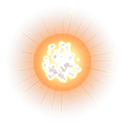
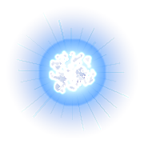

Transformacion temporal
\Delta t'=\gamma\!\left(\Delta t-\frac{v\Delta x}{c^2}\right)
En la playa, las emisiones son simultáneas. En el marco del caminante, su separación espacial también interviene al calcular el intervalo de tiempo.




Cuenta atras en marcha.
La estrella naranja estalla a la vez en las dos viñetas. Compara después la azul.
La viñeta izquierda usa el marco de la playa y la derecha, el de quien camina hacia la estrella naranja. Fijamos el cero de ambos tiempos en la emisión naranja. Las viñetas representan cuándo se emite la luz en cada marco. Su llegada al observador es otro suceso.
En la playa, las emisiones son simultáneas. En el marco del caminante, su separación espacial también interviene al calcular el intervalo de tiempo.
El desfase crece con la velocidad relativa. La animación reescala el efecto para que sea visible en clase.
La naranja fija el origen en las dos escenas. En la playa, la azul estalla en ese mismo instante. Llamamos L a la separación de las estrellas en la playa y tomamos como positivo el sentido de la marcha, hacia la derecha.
Quien camina asigna una hora posterior a la emisión azul. Al invertir los papeles se intercambian las personas que realizan las dos mediciones. La animación comprime los intervalos largos.